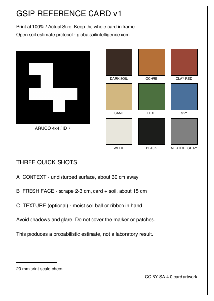
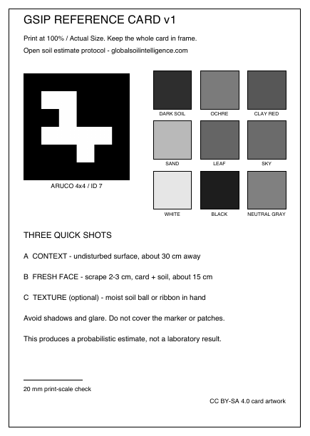

Recommended
Color reference card
Nine documented patches, a neutral reference, and an ArUco marker support geometry and image checks. Soil RGB remains uncalibrated, even with the reference card.
Download color PDFA common visual standard
Print the GSIP reference card and follow the standard soil photography protocol.

Recommended
Nine documented patches, a neutral reference, and an ArUco marker support geometry and image checks. Soil RGB remains uncalibrated, even with the reference card.
Download color PDF
Geometry support
Use this edition when color printing is unavailable. It supports framing, scale, geometry, and exposure—not calibrated color recovery.
Download B&W PDFPrint once, use outside
Use the document’s native A6 size or trim after printing.
Disable “fit to page” so the scale marker stays accurate.
Avoid glossy lamination that introduces glare outdoors.
Capture protocol
Undisturbed ground surface from roughly 30 cm, card visible.
Scrape 2–3 cm, then photograph the exposed soil from roughly 15 cm.
A moistened soil ball or ribbon can improve future texture-confidence work.